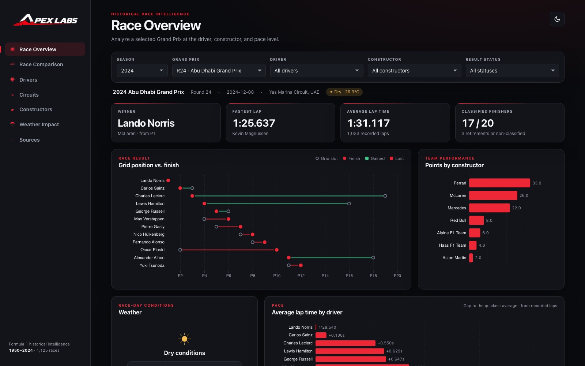

Apex Labs
A desktop simulator where you play race engineer: set up a Formula-style car within budget, mass and regulation limits, run it around a circuit, and see why the lap time changed.
- Lap-time model that finds each corner's speed limit from downforce and tire grip, then works out acceleration and braking along the track.
- Simulated laps are checked against historical F1 timing and telemetry from OpenF1.
- A live web dashboard of historical race results from 1950 to 2024, with filters and CSV export.
C++ · SDL3 · Dear ImGui · Python · SQLite